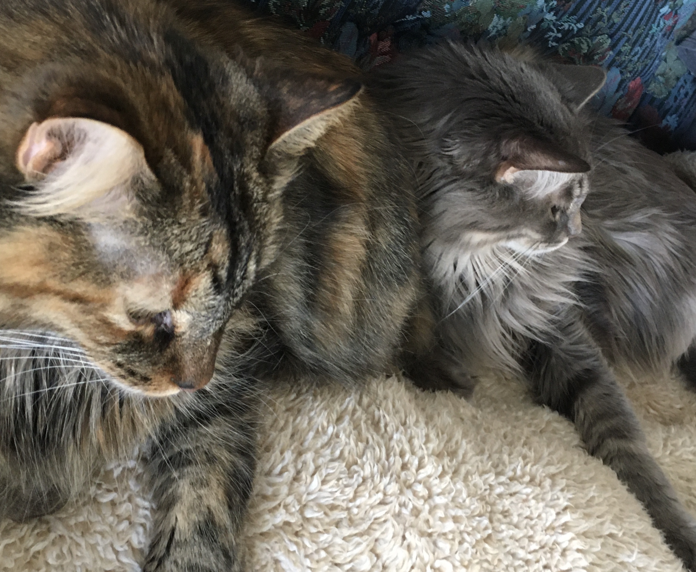

A little more about who I am
I live in Omaha, NE and I have 2 cats, Corby and Emma (I'll introduce you to them more later). I love coffee, beer, rock climbing and enjoying the company of good friends and church family. I work at a construction company here in the Midwest - I answer phones and book appointments for folks who have foundation, basement, or concrete concerns. I love the company I work for and I hope I can stay in it for the long haul. However, I have recently decided answering phones all day isn't the way I'd like to spend the rest of my working life. I have since embarked on a journey toward hopefully becoming a full-stack web developer. I have only been coding for a couple months and so far, it has been the most challenging, frustrating and fun experience I've had in quite some time. Second to rock climbing. Thanks for joining me on this journey!
Meet my fur-babes
Corby is my boy. He's the most complicated creature I've ever met. No one really likes him but everyone can't help but love him. He's much like a dog in the way that he behaves (he can fetch, he can walk on a leash) but he is about as needy as an infant. He's kind of the worst. And I love him more than I love most people.
Emma is my girl and is also the youngest. She's fat. Like, obnoxiously fat. She has a little bit of trouble saying no to that extra trip to the food bowl if you know what I mean. She's ever so timid and gentle and loves to cuddle. Between you and me though, I definitely favor Corby over her. I know, I'm terrible.